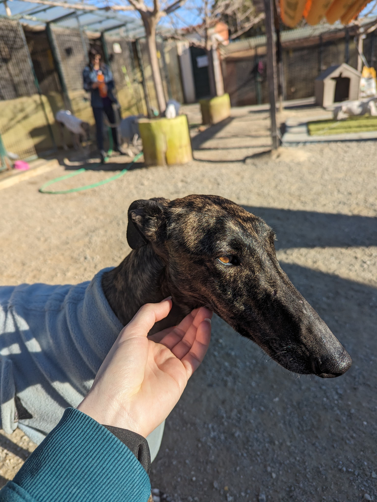

CONOCE A NUESTROS PERRITOS
DAFNE
Tamaño: Mediana
Dafne es super cariñosa y no piensa perder la oportunidad de recibir mimos. Es super sociable con otros lobitos y lleva mucho tiempo esperando encontrar la familia que le de una segunda oportunidad. Como muchos otros, este tipo de perros son criados para caza y luego abandonados, pero este caso sorprende por su capicidad para vivir en una casita y ser un gran perrito de compañia!

LEWIS
Tamaño: Mediana
Es una perrita pastora belga abandonada atada con una cadena. Es super cariñosa y le encanta jugar con las personas. Nunca ladra ni es agresiva ni con los humanos ni con otros perritos.

DESIDER
Tamaño: Grande
Este lobito es realmente precioso. Creemos que es de un criador de perigri debido a su belleza y su marca en la lengua. Es muy sociable con otros seres humanos. Actualmente Neska y el son novios. Desider sufre de leucemia canina y necesita una familia que le cuide.

EROS
Tamaño: Grande
Es un pastor belga con mucha energia. Le encanta jugar con los seres humanos y no es nada agresivo.

PIKACHU
Tamaño: Grande
Pikachu es un galgo de gran tamaño que le encanta pedir mimos constantemente. Le gusta mucho correr y jugar con otros perros.

LAVINIA
Tamaño: Mediana
Es una galguita muy maja y feliz. Le encanta pedir cariño de los seres humanos y el resto de perros le causan indiferencia.
MELA
Tamaño: Pequeña
Mela aparecio abandonada y es super simpatica. Le encanta estar rodeada de humanos y otros perritos. No es agresiva y esta deseando encontrar a una familia.

MILO
Tamaño: Pequeño
Milo es un pequeño lobito super jugueton y cariñoso. Va ha aprovechar la mas minima oportunidad para robarte unas caricias y es super pacifico.

KALA
Tamaño: Grande
Kala es la bondad perrificada. Es super tranquila y le encanta pasear. Su hobby favorito es tumbarse con los rayos de sol en la cara. No es nada agresiva con otros perros y es super obediente y respetuosa.

NESKA
Tamaño: Grande
Esta lobita es de las mas cariñosas que vas a encontrar en estas tierras. Siempre esta dispuesta a recibir mimos y se lleva bien con el resto de lobitos. Cuando dos se ladran suele meterse en medio para separarles, haciendo funciones de perro pastor a la antigua usanza. Fue abandonada con sus cachorros recien nacidos, los cuales ya han encontrado una familia feliz, ahora solo queda ella!